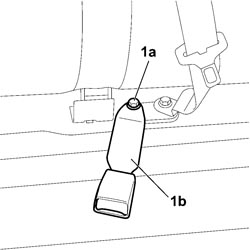

7065B14 ANCHORAGE ROD FOR (ONE) REAR SEAT BELT LEFT OR RIGHT - R.R.
- Path
- Procedures > 70 FITTINGS > 7065 SAFETY BELTS AND ACCESSORIES > 7065B REAR SAFETY BELTS > 7065B14 ANCHORAGE ROD FOR (ONE) REAR SEAT BELT LEFT OR RIGHT - R.R.
- Kind
- repair procedure (removal / refitting; the operation number is the code)
- Applies to
- all engines; all production periods
- Interactive page
- https://sloeber94.github.io/elrnDB-fCrm/en/#/194001194
Applies to: all engines; all production periods
 Removing
Removing
 Refitting
Refitting1. Undo the fixing bolt (1a) and detach the rear seat belt mounting rod (1b) from the vehicle.

Applies to: all engines; all production periods
Refitting
Removing- Check that the rear seat belt mounting rod is not damaged.
- Position the rear seat belt mounting rod in its housing on the crossmember, screw in the fixing bolt and tighten it to the recommended torque.
Component | Fastening | dia | Value (daNm) | Validity |
|---|---|---|---|---|
LEFT SIDE REAR SEATS BUCKLE TO CROSSMEMBER | Bolt | M10x1.25x25 | 3,6 ÷ 4,4 |